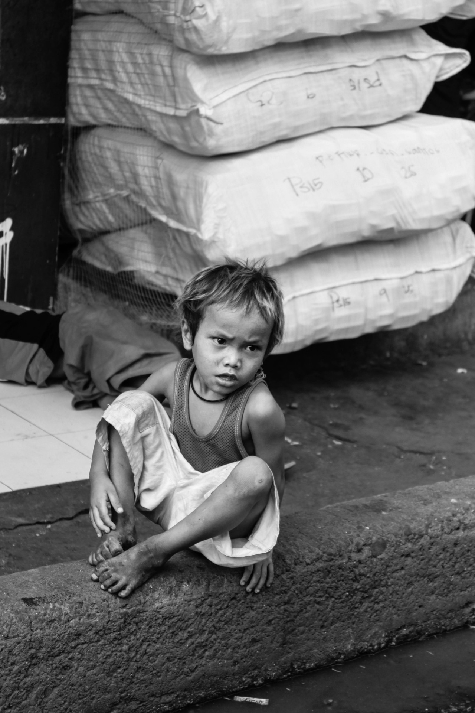

Welcome Brilliant Minds
Philippine Horizon, your trusted source for news on poverty and its impact!
Learn about the causes, facts, and real-life stories that show how poverty affects families and communities. We aim to help you understand poverty and why it matters to all of us. Through our reports, we highlight the struggles people face every day and the impact it has on health, education, and opportunities.
Empower and Inform!
Explore ways to help communities grow and thrive!
We share stories of people working together to solve problems and build a better future. See how education, jobs, and local support can lift communities out of poverty. Join us in taking small steps to create big changes. Every small effort counts, and together, we can create lasting change.Know more about how poverty affects health, education, and opportunities, and how these challenges can be overcome.